Mission 01
Zone 2 Inspection
Focused Zone 2 inspection with localization and greenhouse-state monitoring.
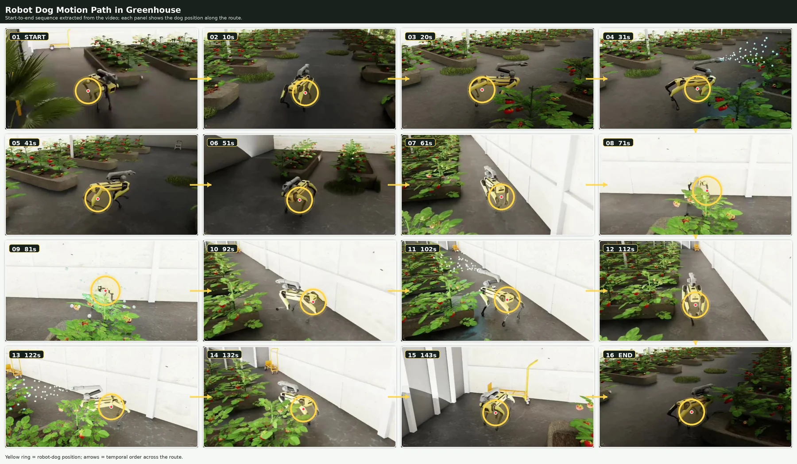
Isaac Sim · GNSS-denied navigation · Vision-language decision-to-action
AgriSense connects a high-fidelity greenhouse digital twin, quadruped mobile manipulation, LiDAR–IMU spatial grounding, multimodal reasoning, and targeted plant-level action.
The framework processes operator prompts, robot-view RGB, LiDAR, IMU, and four-zone greenhouse measurements.
Structured navigation, setpoint, inspection, and intervention proposals are checked for confidence, freshness, feasibility, localization consistency, and reachability before execution.
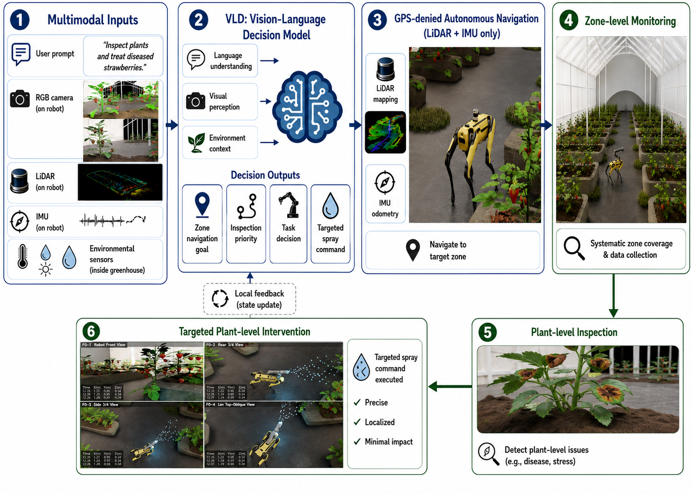
Updated AgriSense system-level pipeline.
The three completed missions play automatically without audio. Use the controls to pause, seek, enter full screen, or enable sound.
Greenhouse geometry, crop rows, aisle corridors, robot sensing, and manipulation context.
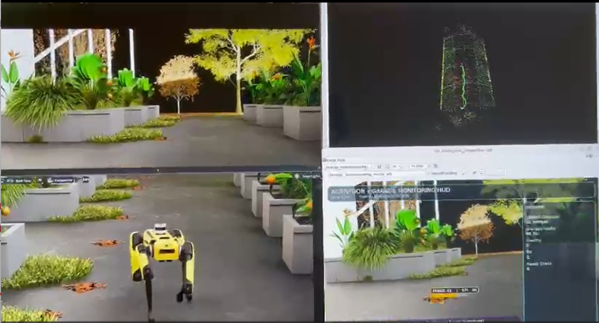
LiDAR–IMU odometry, map construction, zone association, and physical consistency checking.
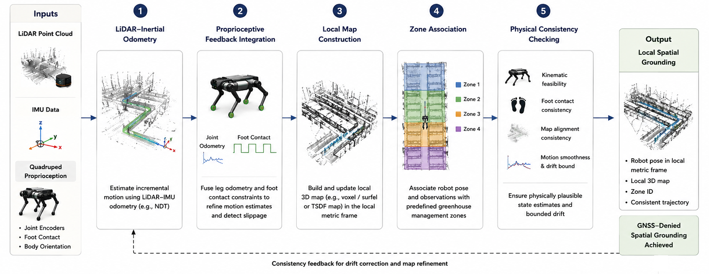
Visual and spatial context exposed from the robot perspective.
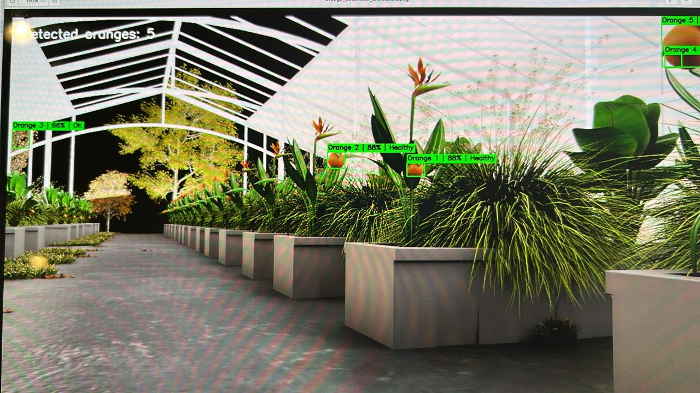
Localized inspection and manipulator-based treatment following validation.
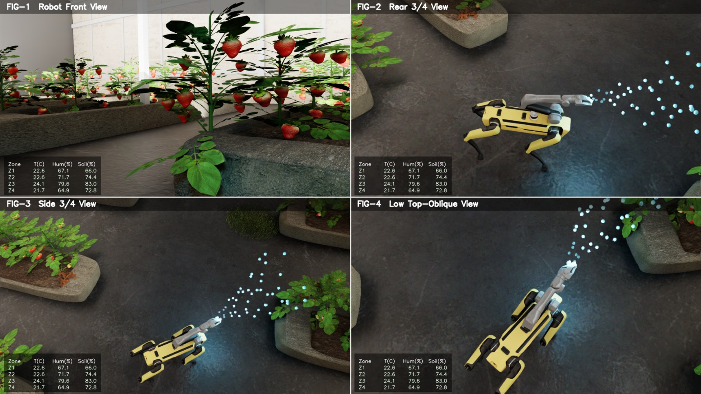
Updated experimental figures from the manuscript and supplementary package. Select any figure to open it at full resolution. The mobile supervision application is presented separately below as a complete video walkthrough.
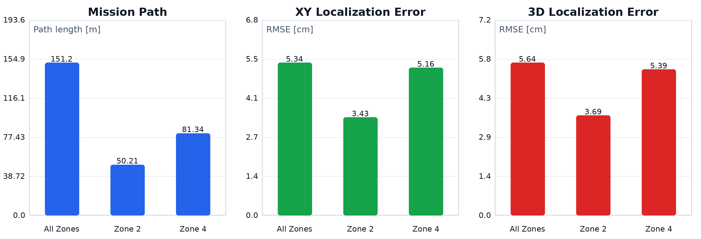
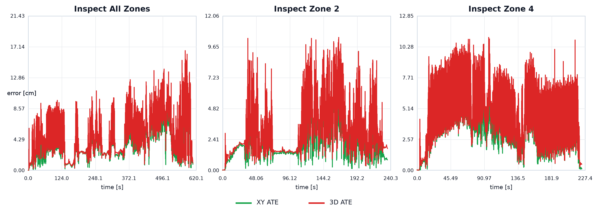
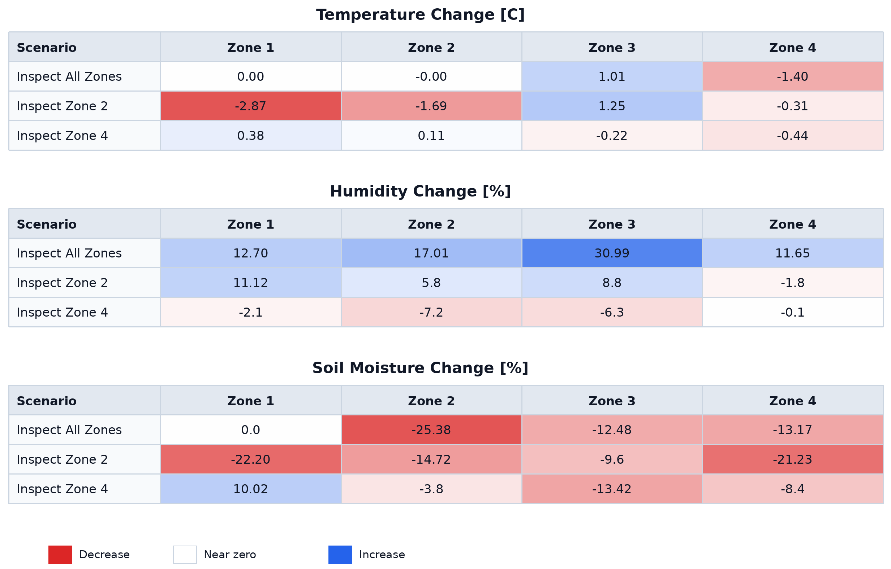
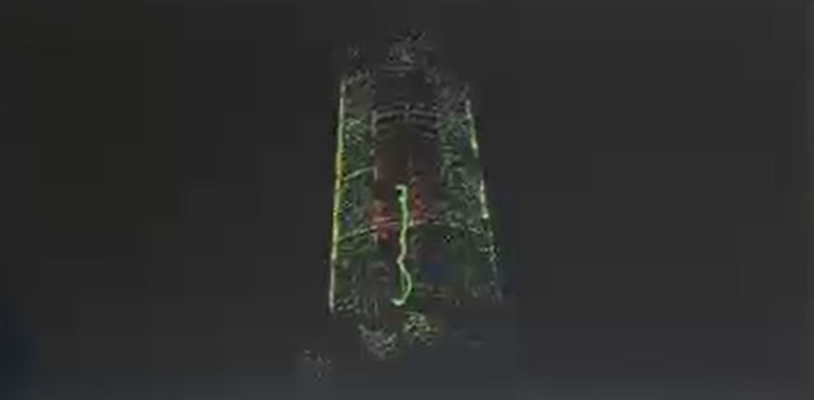
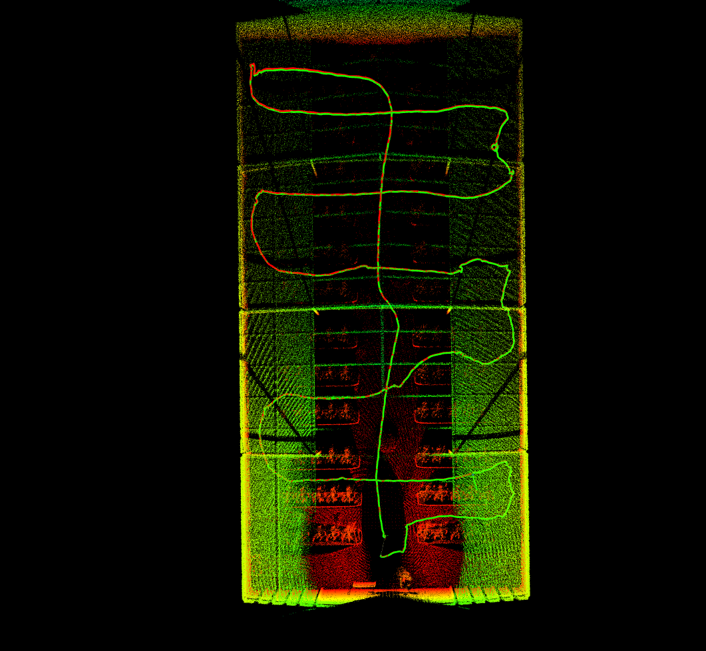
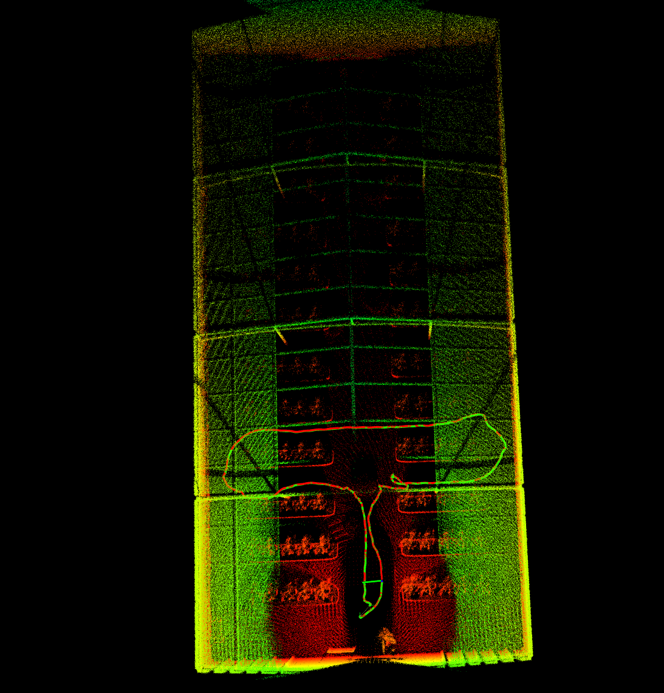
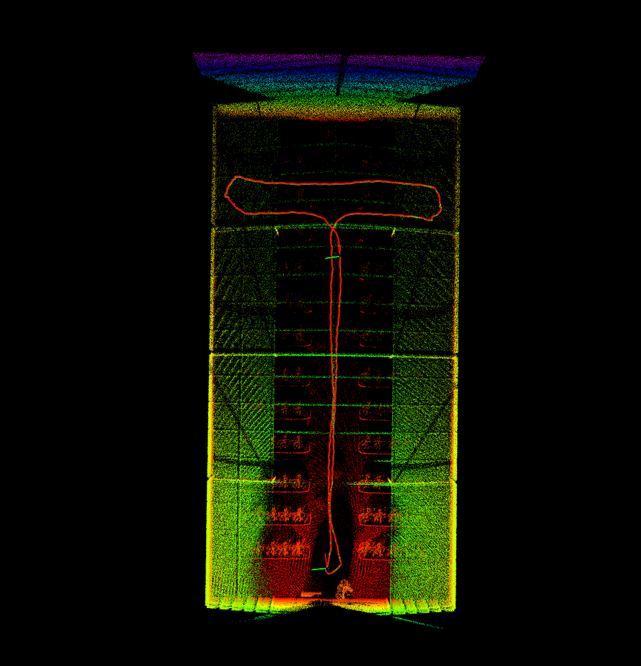
The application video demonstrates the main supervision steps and features, including mission selection, greenhouse-state review, robot status, task progress, and operator-facing monitoring.
The demonstration presents the real application workflow rather than a static interface screenshot. It shows how an operator can inspect greenhouse conditions, follow autonomous missions, review robot and localization information, and observe task execution from a mobile-style interface.
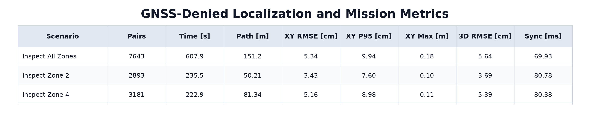
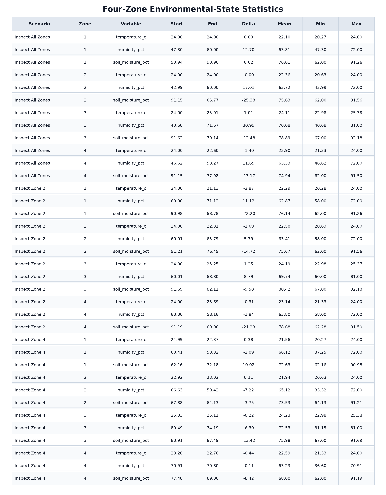
| Mission | Path | Duration | XY RMSE | 3D RMSE |
|---|---|---|---|---|
| All-Zone | 151.23 m | 607.95 s | 5.34 cm | 5.64 cm |
| Zone 2 | 50.21 m | 235.54 s | 3.43 cm | 3.69 cm |
| Zone 4 | 81.34 m | 222.94 s | 5.16 cm | 5.39 cm |
The repository package includes the actual model, dataset loader, training script, offline evaluator, augmentation utilities, configuration, and reproducibility notes under code/.
The associated dataset is hosted privately on Hugging Face during peer review and will be made public after acceptance.
code/src/train_greenhouse_vla_better.py
Multimodal modelcode/src/greenhouse_vla_model_bert_dino_pesticide.py
Dataset loadercode/src/greenhouse_vla_dataset_fixed.py
Evaluationcode/src/evaluate_model_offline_fixed.py
Augmentationcode/src/augment_strawberry_disease_dataset.py
Reproducibilitycode/docs/REPRODUCIBILITY.md
AgriSense · 2026
The public site presents the completed missions and current reproducibility resources. Dataset access remains private during review.